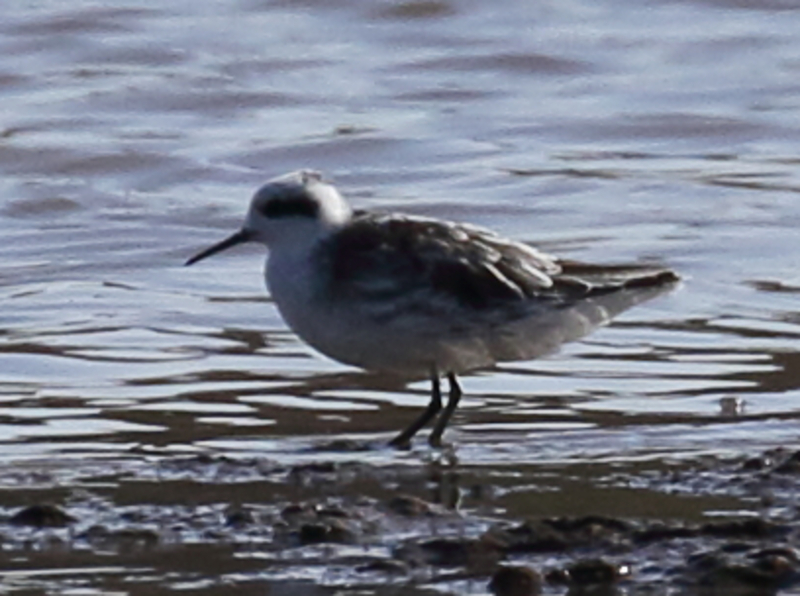

From: Nate Dias <offshorebirder@gmail.com>
Date: 2017-44-18 04:01
Subject: 10 Red-necked Phalaropes, Bat Hawk - Lake Bogoria and nearby
The day before yesterday Roger Smith, Francis Cherutich, Ben Mugambi
and I had a total of 10 Red-necked Phalaropes at Lake Bogoria.
I was not expecting phalaropes at that location. When I spotted one
while scanning a flock of shorebirds, at first my brain refused to
accept it. But the black eye spot, pale plumage except semi-streaked
dark gray mantle, etc. made me realize it was indeed a Red-necked
Phalarope!
We had a total of 10 phalaropes scattered around among the usual
shorebirds - which were all quite skittish and did not allow for close
approaches (outside the vehicle). The level of harassment by local
children is abundantly obvious - a few were looking for trouble while
we were there. Between that and the goats, dogs, etc. roaming the
place, it looks to be a sad state of affairs at Bogoria today.
On the way back to Tumbili Cliff Lodge, Francis spotted a Bat Hawk
chasing bats near the southern end of the Baringo cliffs. We then
lost it in the dimming light when it went below the cliffs. Then a
couple of minutes later Roger spotted it again and we enjoyed decent
looks for 8-9 seconds.
I imagine that might be a fairly reliable spot for Bat Hawks in the future.
I attached a documentary photo of a Red-necked Phalarope - not the
best quality but the distance was great and the light was harsh.
Good birding,
Nathan Dias
